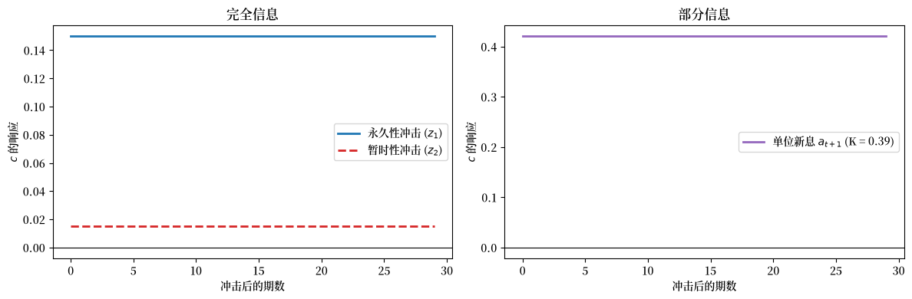
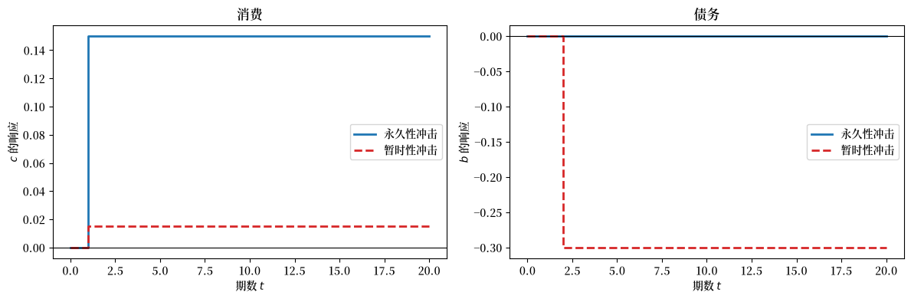
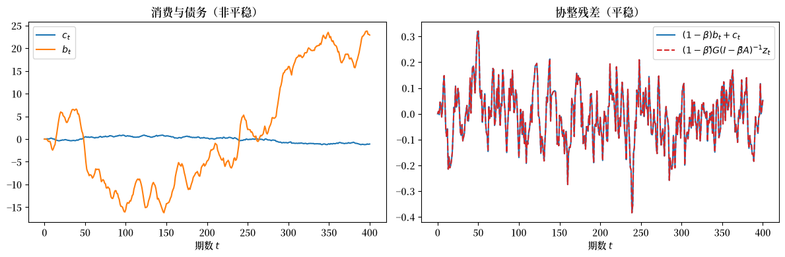
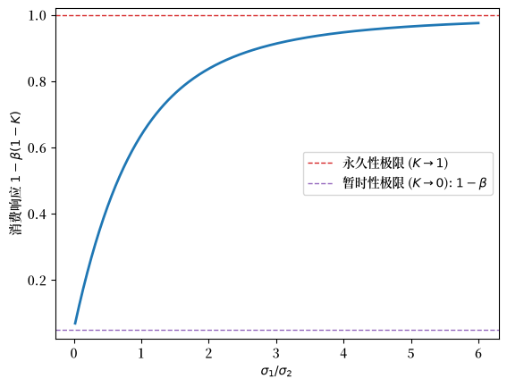

84. LQ 永久收入模型#
84.1. 概述#
本讲座研究线性二次型（LQ）永久收入模型中的消费平滑。
它给出了 Friedman [1956] 和 Hall [1978] 永久收入理论的理性预期版本。
在整个讲座中，我们设定 \(\beta R = 1\)，使得基准消费者的主观贴现因子等于债券价格。
该模型对于研究以下内容很有用
脉冲响应函数
最优决策规则的其他状态空间表示
消费与资产的协整
我们推导消费者的最优消费函数，给出最优决策规则的两种状态空间表示，并用两个经典例子加以说明。
这是关于 LQ 永久收入模型的四讲中的第一讲。
后续三讲直接建立在这里开发的工具之上。
不完全市场与完全市场下的消费平滑 研究消费的横截面行为，并将单个消费者嵌入具有不完全市场和完全市场的封闭经济中。
稳健消费平滑与预防性储蓄 研究一个不信任自己收入模型并进行预防性储蓄的消费者。
稳健 LQ 贝利模型 将两者结合起来，构建一个贝尔利经济，其中消费者对自己收入模型的不信任程度各不相同。
让我们从一些导入开始。
import numpy as np
import matplotlib.pyplot as plt
import matplotlib as mpl # i18n
FONTPATH = "fonts/SourceHanSerifSC-SemiBold.otf" # i18n
mpl.font_manager.fontManager.addfont(FONTPATH) # i18n
mpl.rcParams['font.family'] = ['Source Han Serif SC'] # i18n
from scipy.linalg import solve, inv, solve_discrete_lyapunov
from scipy.stats import norm
84.2. 标准 LQ 永久收入模型#
84.2.1. 设定#
一个消费者对消费流具有偏好，其排序由下式给出
其中 \(\mathbb{E}_t\) 是以消费者时刻 \(t\) 的信息为条件的数学期望， \(c_t\) 是时刻 \(t\) 的消费，\(u(c)\) 是严格凹的单期效用函数，且 \(\beta \in (0,1)\) 是贴现因子。
消费者通过选择一个计划 \(\{c_t, b_{t+1}\}_{t=0}^{\infty}\) 来最大化 (84.1)，并满足预算约束序列
其中 \(\{y_t\}\) 是外生的平稳禀赋过程，\(R\) 是常数总无风险利率，\(b_t\) 是在 \(t\) 到期的单期无风险债券，\(b_0\) 是给定的初始条件。
备注
对于 \(t \geq 1\)，\(b_t\) 是在时刻 \(t-1\) 选择的。
债券 \(b_t > 0\) 表示消费者在期初 \(t\) 所欠的债务。
我们假设 \(R^{-1} = \beta\)。
禀赋或非金融收入过程具有状态空间表示
其中 \(w_{t+1}\) 是均值为零且协方差矩阵为单位矩阵的 IID，\(\check{A}\) 是稳定矩阵（特征值的模严格小于一），且 \(\check{G}\) 是行向量。
家庭在 \(t\) 面临的状态是 \(\bigl[b_t \;\; z_t^\top\bigr]^\top\)，其中 \(b_t\) 是其在期初 \(t\) 到期的单期债务， 而 \(z_t\) 包含所有对预测其未来禀赋有用的变量。
为了使问题成为线性二次型，我们采用二次效用函数
其中 \(\gamma > 0\) 是消费的极乐水平。
我们允许 \(c_t\) 为负（此时是生产者而非消费者）。
我们施加一个横截性条件
它排除了庞氏骗局。
84.2.2. 欧拉方程与确定性等价#
在二次效用下，消费者问题的一阶条件意味着
因为消费者在线性转移方程的约束下最大化二次目标， 所以该问题满足确定性等价性质。
这意味着我们可以通过以下方式找到最优计划
首先在假装拥有完全预见的情况下求解问题；这让我们能够将 \(c_t\) 表示为 \(b_t\) 和延续序列 \(\{y_{t+j}\}_{j=0}^{\infty}\) 的函数
然后只需用 \(\{\mathbb{E}_t y_{t+j}\}_{j=0}^{\infty}\) 替换 \(\{y_{t+j}\}_{j=0}^{\infty}\)。
84.2.3. 最优消费函数#
将预算约束 (84.2) 向前求解，施加横截性条件，并取条件期望，得到
重新整理得到消费函数
等价地，用由 \(\beta = 1/(1+r)\) 定义的净利率 \(r\) 表示，
显然，\(t\) 时刻的消费等于 \(r/(1+r)\) 乘以总财富，其中总财富是人力财富 \(\sum_{j=0}^{\infty}\beta^j \mathbb{E}_t y_{t+j}\) 与金融财富 \(-b_t\) 之和。
使用状态空间表示 (84.3) 来计算预期未来禀赋的几何级数和，
我们得到
这将 \(c_t\) 表示为家庭所面临的状态 \([b_t,\, z_t^\top]^\top\) 的函数。
84.2.4. 表示 1：状态 \((b_t, z_t)\)#
将禀赋运动定律与最优债务动态（通过将 (84.10) 代入 (84.2) 得到）相结合，给出如下表示：
在此表示中，外生状态是 \(z_t\)，而内生状态是 \(b_t\)。
现在我们转向另一种表示。
84.2.5. 表示 2：状态 \((c_t, z_t)\)#
Hall [1978] 证明了 LQ 永久收入模型蕴含一种表示， 其中状态由当前消费 \(c_t\) 和外生禀赋状态 \(z_t\) 构成。
在此表示中，\(b_t\) 成为一个结果而非状态变量。
将 (84.7) 向前推移，通过 (84.2) 消去 \(b_{t+1}\)，并重新整理，得到
右侧是 \((1-\beta)\) 乘以对禀赋流预期现值的时刻 \((t+1)\) 新息。
假设禀赋具有（Wold）移动平均表示
其中 \(d(L) = \check{G}(I - \check{A} L)^{-1}\check{C}\)。
那么
这里，\(d(\beta) = \check{G}(I-\beta\check{A})^{-1}\check{C}\) 是**（Wold）移动平均系数的现值**。
因此，消费是一个随机游走，其新息为 \((1-\beta)d(\beta)w_{t+1}\)。
这种表示揭示了最优决策规则的若干重要特征：
状态：状态由内生分量 \(c_t\) 和外生分量 \(z_t\) 构成，金融资产 \(b_t\) 被编码在 \(c_t\) 中，而不是作为单独的状态携带。
随机游走：消费是一个随机游走，其新息为 \((1-\beta)d(\beta)w_{t+1}\)，这 确认了欧拉方程 (84.5) 已内建于解中，并意味着 消费没有渐近平稳分布。
箱形脉冲响应：对于所有 \(j \geq 1\)，\(c_{t+j}\) 对新息 \(w_{t+1}\) 的响应是常数 \((1-\beta)d(\beta)\)，给出一个”箱形”脉冲响应。
协整：\(c_t\) 和 \(b_t\) 都是非平稳的（单位根过程），但 线性组合 \((1-\beta)b_t + c_t\) 是平稳的。
由 (84.6)，
左侧是协整残差。
84.2.6. 债务动态#
将 (84.16)（\(b_t\) 的方程）在时刻 \(t\) 从同一方程在时刻 \(t+1\) 中减去 并代入，得到
这表明 \(b_{t+1}\) 在时刻 \(t\) 作为 \(z_t\) 单独的函数已预先确定。
从任意 \(t\) 向后求解，\(b_t\) 依赖于整个历史 \(z^{t-1} = [z_{t-1},\ldots,z_0]\) 和初始条件 \(b_0\)。
这种历史依赖性是各种不完全市场经济中消费计划的一个标志。
84.2.7. 两个经典例子#
我们用两个例子来说明公式 (84.16)。
在这两个例子中，禀赋均为 \(y_t = z_{1t} + z_{2t}\)，其中
这里 \(z_{1t}\) 是 \(y_t\) 的永久性分量，而 \(z_{2t}\) 是纯暂时性分量。
在完全信息的例子中，消费者在时刻 \(t\) 观测到状态 \(z_t\)，因此他 可以从 \(z_{t+1}\) 和 \(z_t\) 重构出 \(w_{t+1}\)。
应用 (84.16)：
对永久性分量 \(z_{1t}\) 的单位增量一对一地永久提高消费， 并导致零净储蓄。
对纯暂时性分量的单位增量仅永久提高 消费 \((1-\beta)\) 这一比例，而其余比例 \(\beta\) 被储蓄。
由 (84.18)：
这确认了永久性冲击完全没有被储蓄，而暂时性冲击则全部被储蓄。
在不完全信息（Muth 模型）的例子中，消费者观测到 \(y_t\) 及其历史， 但不能分别观测到 \(z_{1t}\) 和 \(z_{2t}\)。
恰当的方法使用由卡尔曼滤波器推导出的新息表示。
在卡尔曼滤波器稳态下，卡尔曼增益 \(K \in [0,1]\) 满足
其中 \(K\) 随着比率 \(\sigma_1^2/\sigma_2^2\)（永久性冲击相对于暂时性冲击的方差） 的增大而增大。
新息表示将禀赋表示为其自身新息 \(a_t = y_t - \mathbb{E}[y_t \mid y^{t-1}]\)（提前一步的预测误差）中的 ARMA(1,1)：
这里滞后新息上的系数 \(-(1-K)\) 反映出只有上期意外的比例 \(K\) 被视为永久性的；其余部分均值回归。
标量 \(a_t\) 是 IID，方差为 \(\Sigma + \sigma_2^2\)。
将 (84.16) 应用于这个新息表示：
消费者将新息 \(a_{t+1}\) 的比例 \(K\) 视为永久性的，将比例 \(1-K\) 视为暂时性的。
他将消费永久提高 \(a_{t+1}\) 的 \(K + (1-\beta)(1-K) = 1 - \beta(1-K)\)， 并储蓄其余比例 \(\beta(1-K)\)。
收入的一阶差分服从一阶移动平均：
相比之下，由 (84.24)，消费的一阶差分是 IID 的。
84.2.8. 实现#
# 参数
β = 0.95 # 贴现因子（因此 R = 1/β）
σ1 = 0.15 # 永久性冲击的标准差
σ2 = 0.30 # 暂时性冲击的标准差
# 例子 1：完全信息
A_check = np.array([[1.0, 0.0],
[0.0, 0.0]])
C_check = np.array([[σ1, 0.0],
[0.0, σ2]])
G_check = np.array([[1.0, 1.0]])
# 关键矩阵 M = G(I - βA)^{-1}
IbA = np.eye(2) - β * A_check
M = G_check @ inv(IbA) # 形状 (1, 2)
# 消费脉冲响应
h = (1 - β) * M @ C_check # 形状 (1, 2)
irf_perm_ex1 = h[0, 0] / σ1 # 每单位永久性冲击标准差的响应
irf_trans_ex1 = h[0, 1] / σ2 # 每单位暂时性冲击标准差的响应
print("例子 1（完全信息）")
print(f" c 对永久性冲击的 IRF （已标准化）: {irf_perm_ex1:.4f} "
f"（理论值: 1.0）")
print(f" c 对暂时性冲击的 IRF（已标准化）: {irf_trans_ex1:.4f} "
f"（理论值: {1-β:.4f}）")
例子 1（完全信息）
c 对永久性冲击的 IRF （已标准化）: 1.0000 （理论值: 1.0）
c 对暂时性冲击的 IRF（已标准化）: 0.0500 （理论值: 0.0500）
# 例子 2：部分信息
Σ = (σ1**2 + np.sqrt(σ1**4 + 4 * σ1**2 * σ2**2)) / 2
K = Σ / (Σ + σ2**2)
print("例子 2（部分信息）")
print(f" 稳态卡尔曼增益 K = {K:.4f}")
print(f" c 对单位新息 a_{{t+1}} 的 IRF: {1 - β*(1-K):.4f}")
print(f" 被视为永久性的新息比例（K）: {K:.4f}")
print(f" 被储蓄的比例: β(1-K) = {β*(1-K):.4f}")
例子 2（部分信息）
稳态卡尔曼增益 K = 0.3904
c 对单位新息 a_{t+1} 的 IRF: 0.4209
被视为永久性的新息比例（K）: 0.3904
被储蓄的比例: β(1-K) = 0.5791
# 比较脉冲响应
T = 30
irf_c_ex1_perm = np.ones(T) * irf_perm_ex1 * σ1
irf_c_ex1_trans = np.ones(T) * irf_trans_ex1 * σ2
irf_c_ex2 = np.ones(T) * (1 - β * (1 - K)) # 每单位新息 a_t
fig, axes = plt.subplots(1, 2, figsize=(12, 4))
axes[0].axhline(0, color='k', linewidth=0.8)
axes[0].step(range(T), irf_c_ex1_perm, where='post',
label='永久性冲击 ($z_1$)', color='C0', lw=2)
axes[0].step(range(T), irf_c_ex1_trans, where='post',
label='暂时性冲击 ($z_2$)', color='C3',
linestyle='--', lw=2)
axes[0].set_xlabel('冲击后的期数')
axes[0].set_ylabel('$c$ 的响应')
axes[0].set_title('完全信息')
axes[0].legend()
axes[1].axhline(0, color='k', linewidth=0.8)
axes[1].step(range(T), irf_c_ex2, where='post',
label=f'单位新息 $a_{{t+1}}$ (K = {K:.2f})',
color='C4', lw=2)
axes[1].set_xlabel('冲击后的期数')
axes[1].set_ylabel('$c$ 的响应')
axes[1].set_title('部分信息')
axes[1].legend()
fig.tight_layout()
plt.show()
findfont: Failed to find font weight normal, now using 600.
findfont: Failed to find font weight normal, now using 600.
findfont: Failed to find font weight normal, now using 600.

图 84.1 消费脉冲响应#
备注
脉冲响应具有 LQ 永久收入模型特有的”箱形”形状：一旦 冲击发生，消费便永久转移到一个新水平并保持在那里。
这里开发的两种表示和例子是后续两讲的基础。
不完全市场与完全市场下的消费平滑 使用 \((c_t, z_t)\) 表示 (84.16) 来研究消费的横截面分布如何在具有不完全市场和完全市场的封闭经济中演变。
稳健消费平滑与预防性储蓄 研究一个不信任禀赋过程 (84.3) 并进行预防性储蓄的消费者。
稳健 LQ 贝利模型 将这类消费者置于一个贝利经济中，并表明他们对模型设定错误的担忧不会在数量数据中留下任何痕迹。
84.3. 练习#
练习 84.1
本练习验证在完全信息的双因子模型中消费和债务对永久性和暂时性冲击的响应。
考虑 (84.19) 的模型，采用上面使用的校准。
假设经济从 \(z_0 = 0\) 和 \(b_0 = 0\) 开始，并在 \(t = 1\) 时受到单一冲击：要么是单位永久性冲击 \(w_1 = (1, 0)^\top\)，要么是单位暂时性冲击 \(w_1 = (0, 1)^\top\)，此后没有进一步的冲击。
使用表示 (84.11)，计算并绘制每次冲击后消费 \(c_t\) 和债务 \(b_t\) 的路径。
确认永久性冲击将消费永久提高 \(\sigma_1\) 并且不引起储蓄，而暂时性冲击将消费永久提高 \((1-\beta)\sigma_2\)，其余部分被储蓄。
解答 练习 84.1
这里是一个解答：
我们在 \(t = 1\) 时施加单一冲击，将表示 (84.11) 向前迭代。
def impulse_response(shock, T=20):
"""在 t=1 施加单一冲击后 c 和 b 的路径（z_0 = b_0 = 0）。"""
I2 = np.eye(2)
b_coef = M @ (A_check - I2) # b 定律中 z_t 上的系数
z = np.zeros((T + 1, 2))
b = np.zeros(T + 1)
z[1] = C_check @ shock # 冲击在 t = 1 实现
for t in range(1, T):
z[t + 1] = A_check @ z[t]
for t in range(T):
b[t + 1] = b[t] + (b_coef @ z[t]).item()
c = np.array([((1 - β) * (M @ z[t] - b[t])).item() for t in range(T + 1)])
return c, b
c_perm, b_perm = impulse_response(np.array([1.0, 0.0]))
c_tran, b_tran = impulse_response(np.array([0.0, 1.0]))
fig, axes = plt.subplots(1, 2, figsize=(12, 4))
axes[0].step(range(len(c_perm)), c_perm, where='post',
label='永久性冲击', color='C0', lw=2)
axes[0].step(range(len(c_tran)), c_tran, where='post',
label='暂时性冲击', color='C3', linestyle='--', lw=2)
axes[0].axhline(0, color='k', lw=0.8)
axes[0].set_xlabel('期数 $t$')
axes[0].set_ylabel('$c$ 的响应')
axes[0].set_title('消费')
axes[0].legend()
axes[1].step(range(len(b_perm)), b_perm, where='post',
label='永久性冲击', color='C0', lw=2)
axes[1].step(range(len(b_tran)), b_tran, where='post',
label='暂时性冲击', color='C3', linestyle='--', lw=2)
axes[1].axhline(0, color='k', lw=0.8)
axes[1].set_xlabel('期数 $t$')
axes[1].set_ylabel('$b$ 的响应')
axes[1].set_title('债务')
axes[1].legend()
fig.tight_layout()
plt.show()
print(f"永久性冲击: Δc = {c_perm[-1]:.4f} （理论 σ1 = {σ1:.4f}），"
f" Δb = {b_perm[-1]:.4f}")
print(f"暂时性冲击: Δc = {c_tran[-1]:.4f} "
f"（理论 (1-β)σ2 = {(1-β)*σ2:.4f}）， Δb = {b_tran[-1]:.4f}")

永久性冲击: Δc = 0.1500 （理论 σ1 = 0.1500）， Δb = 0.0000
暂时性冲击: Δc = 0.0150 （理论 (1-β)σ2 = 0.0150）， Δb = -0.3000
永久性冲击将消费提高 \(\sigma_1\) 并使债务保持为零：冲击被完全资本化，因此没有净储蓄。
暂时性冲击仅将消费提高 \((1-\beta)\sigma_2\)；消费者储蓄其余部分，因此债务降至 \(-\sigma_2\)（资产积累）。
练习 84.2
本练习说明 (84.17) 中所描述的消费与债务的协整。
协整结果需要一个平稳禀赋，因此我们用一个标量 AR(1) 替换双因子过程，
其中 \(\rho = 0.7\) 且 \(\sigma_\varepsilon = 0.5\)。
使用表示 (84.11) 模拟 \(c_t\) 和 \(b_t\) 的一条长路径。
验证 \(c_t\) 和 \(b_t\) 各自都继承了一个单位根（它们游走），而协整残差 \((1-\beta)b_t + c_t\) 是平稳的，且等于 \((1-\beta)\check{G}(I-\beta\check{A})^{-1}z_t\)。
解答 练习 84.2
这里是一个解答：
ρ, σε = 0.7, 0.5
A_ar = np.array([[ρ]])
C_ar = np.array([[σε]])
G_ar = np.array([[1.0]])
M_ar = G_ar @ inv(np.eye(1) - β * A_ar) # G(I - βA)^{-1}
b_coef_ar = M_ar @ (A_ar - np.eye(1)) # b 定律中 z_t 上的系数
rng = np.random.default_rng(0)
T = 400
z = np.zeros((T + 1, 1))
b = np.zeros(T + 1)
for t in range(T):
z[t + 1] = A_ar @ z[t] + C_ar @ rng.standard_normal(1)
b[t + 1] = b[t] + (b_coef_ar @ z[t]).item()
c = np.array([((1 - β) * (M_ar @ z[t] - b[t])).item() for t in range(T + 1)])
residual = (1 - β) * b + c
theory = np.array([((1 - β) * (M_ar @ z[t])).item() for t in range(T + 1)])
fig, axes = plt.subplots(1, 2, figsize=(12, 4))
axes[0].plot(c, label='$c_t$', lw=1.5)
axes[0].plot(b, label='$b_t$', lw=1.5)
axes[0].set_xlabel('期数 $t$')
axes[0].set_title('消费与债务（非平稳）')
axes[0].legend()
axes[1].plot(residual, label=r'$(1-\beta)b_t + c_t$', lw=1.5, color='C0')
axes[1].plot(theory, label=r'$(1-\beta)\check{G}(I-\beta\check{A})^{-1}z_t$',
lw=1.5, linestyle='--', color='C3')
axes[1].set_xlabel('期数 $t$')
axes[1].set_title('协整残差（平稳）')
axes[1].legend()
fig.tight_layout()
plt.show()
print(f"max |residual - theory| = {np.max(np.abs(residual - theory)):.2e}")

max |residual - theory| = 2.36e-16
\(c_t\) 和 \(b_t\) 都继承了随机游走消费规则内建于解中的单位根，因此它们漂移而不会稳定下来。
它们的线性组合 \((1-\beta)b_t + c_t\) 与 \((1-\beta)\check{G}(I-\beta\check{A})^{-1}z_t\) 一致（直至浮点误差），后者是平稳状态 \(z_t\) 的一个平稳函数。
练习 84.3
本练习探讨消费者的信息问题如何在 Muth 模型中塑造他对收入意外的响应。
回顾 (84.24)，对单位收入新息 \(a_{t+1}\) 的永久消费响应为 \(1 - \beta(1-K)\)，其中 (84.22) 中的卡尔曼增益 \(K\) 取决于比率 \(\sigma_1/\sigma_2\)。
在保持 \(\sigma_2\) 固定的情况下，将响应 \(1 - \beta(1-K)\) 绘制为比率 \(\sigma_1/\sigma_2\) 的函数。
解释两个极限情形 \(\sigma_1/\sigma_2 \to 0\) 和 \(\sigma_1/\sigma_2 \to \infty\)，并将它们与完全信息模型的两种冲击联系起来。
解答 练习 84.3
这里是一个解答：
ratios = np.linspace(0.02, 6.0, 300)
σ2_fixed = 0.30
responses = []
for r in ratios:
s1 = r * σ2_fixed
Σ = (s1**2 + np.sqrt(s1**4 + 4 * s1**2 * σ2_fixed**2)) / 2
K = Σ / (Σ + σ2_fixed**2)
responses.append(1 - β * (1 - K))
fig, ax = plt.subplots()
ax.plot(ratios, responses, lw=2, color='C0')
ax.axhline(1.0, color='C3', linestyle='--', lw=1,
label=r'永久性极限 ($K\to1$)')
ax.axhline(1 - β, color='C4', linestyle='--', lw=1,
label=r'暂时性极限 ($K\to0$): $1-\beta$')
ax.set_xlabel(r'$\sigma_1/\sigma_2$')
ax.set_ylabel(r'消费响应 $1-\beta(1-K)$')
ax.legend()
plt.show()

当 \(\sigma_1/\sigma_2 \to 0\) 时，禀赋被暂时性噪声主导，因此 \(K \to 0\)：消费者将每个新息视为暂时性的，仅将消费提高 \(1-\beta\)，这与完全信息模型中的纯暂时性冲击完全相同。
当 \(\sigma_1/\sigma_2 \to \infty\) 时，禀赋被永久性冲击主导，因此 \(K \to 1\)：消费者将每个新息视为永久性的，并一对一地提高消费，这与永久性冲击完全相同。
对于中间的比率，消费者最优地拆分每个意外，将他归因于永久性分量的比例 \(K\) 资本化，并储蓄其余部分。